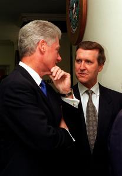

-
home -
911 Open Letters -
~
Honorable Madam Chair, Judiciary Committee, Montana House of Representatives
Introduction

Statecraft, Secrecy, and
Security
Then- U. S. President Bill Clinton With
Secretary of Defense William S. Cohen
~
"A Mob of Unnecessary Duplicates"
"Seat thyself sultanically among the moons of Saturn, and take high
abstracted man alone; and he seems a wonder, a grandeur, and a woe. But from the
same point, take mankind in mass, and for the most part, they seem a mob of
unnecessary duplicates..."
Herman Melville in his novel of 1851, Moby Dick
1
~
Honorable Madam Chair, Judiciary Committee, Montana House of Representatives,
To introduce my view
of our common condition I offer to you now a synopsis of sorts, followed
by a synthesis of several "S" words.
Political legitimacy is in a state of crisis at present moment. The western
mass media is buckling under the strain invoked by a need to reassure an
awakening American and United Kingdom public that the events of 911 did indeed
happen just as the official government accounting has stated. Daily all across
the western world countless citizens are awakening despite the best efforts at
"damage control" executed by the controllers of the mass media, the press,
talk-radio, magazines, government proclamation, speeches, and Internet pro-imperialism websites - all of which
posit the basic government "theory" that al Qaeda attacked America on 911
without any assistance by, or foreknowledge by, the most powerful global
government in the history of civilization featuring the most technetronically-advanced
defense system on the planet.
As part of his 2006 re-election campaign in Montana, Republican Senator Conrad Burns
attacked his opponent, Democrat John Tester, by, among other blasts, accusing Mr. Tester of opposing
the USA PATRIOT ACT of 2001 and of calling for U.S. withdrawal militarily
from Iraq.
Mr. Burns failed to discern, even five years after 911, that the
attacks of 911 might have been planned and carried out by agents of the U.S. government
operating within
a criminal network inside government offices and agencies. I am
hypothesizing to the Committee that it is very possible that a cabal - a
criminal network - could extend and operate across agency lines, from
inside the CIA to the NSA, from inside the Pentagon to the State Department, from
inside FEMA to the
White House, and etc. and etc., and that such a cabal could certainly have the
capabilities, man-power, materials, equipment, and even the black-budget financing required
to execute an amazing series of daring, sophisticated attacks on 9/11.
As a result of Mr. Burns' failure
to examine the massive body of evidence which exposes the government explanation
of 911 for the great fraud that it appears to be, Mr. Burns had no reason to abstain when it
came time to vote the USA PATRIOT ACT and the Real ID Act into being. Mr. Burns
claimed that the U.S. troops in Iraq are "fighting al Qaeda". While
there are other apparent reasons which seem to be stronger, I would suggest that
this is part of the reason Mr. Burns was defeated.
Mr. Burns claimed
that tighter controls over the domestic population and the monitoring by the NSA
of everyone's communications here in America and abroad was necceary. He claimed
that such measures were directly
responsible for foiling the alleged attempted bombings of ten aircraft by
British-based al Qaeda terrorists in August, 2006. But Mr. Burns, in his zealous
adherence to everything proclaimed by the Bush Administration, overlooked the fact
that the NSA and Homeland Security did not interdict the planned bombing of ten
airplanes by eavesdropping on my personal email and telephone
conversations. That is a fact which reveals that, at least in my individual case, I have
every moral right to demand of the Federal government that at all times it must honor my
rights under the Fourth Amendment, specifically the words: "probable cause".
Mr. Burns lost his campaign race to Mr. Tester. The Republican Party, by and
large, took, in President Bush's words, "a thumping".
Like Senator Burns, most Americans and many Montanans at this time
still believe the government's official accounting of 911. Like Senator Burns,
many Americans still follow blindly every dictum emanating from the White House of the
George Walker Bush Administration. Like Senator Burns, many tax-paying citizens
of America have already willed in their hearts and minds to believe that foreign
enemies, specifically the Osama bin Laden al Qaeda terror network, attacked us
on 911 with no assistance from anyone inside the U.S. Federal government.
Many Americans even believe that the al Qaeda network attacked America with no
provocation by the U.S. government. Yet,
above this limited and implanted mass perception stands the lonely and forsaken
truth, which silently, like a robed lady of antiquity preserved forever in
the visage of the Statue of Liberty, laments the loss of individual reason in the
wake of mass programming as it has been cunningly engineered by the controllers of
the media and press - and the controllers for whom the media and press advance a
subtle but powerful motive.
Above the mass mistake in perception, above the throngs who sprouted millions
of tiny American flag decals and "support our troops" decals overnight when the
President encouraged this nation into a pre-emptive mode of world-wide war while
promising that this new form of war would spread all over the world and would
last beyond our lifetimes, for at least a hundred years or more - above all the
flag-waving and wildly squealed pseudo-patriotic rhetoric and the public
debates; above the willful subjection of once-free Americans to a de facto
police state rule of fear; above the willingness of the masses to sacrifice yet
more of their freedoms in the name of "security", above all that and more stands
firmly and eternally a shocking truth which must wait, possibly, for a new
generation to materialize its final appearance. But however unpopular,
however difficult to believe, however impossible it must seem to the uninitiated
on the face of it, the truth is there. That truth shall out, as truth always
does. Time always tells the truth. I hope to shorten the time which human life
shall require for an awakened understanding of the ugly truth of 911.
Today's masses seem to be incapable of elevating their imaginations, their
understandings, their mental perceptions, to rise to the occasion. Today's masses may
never know the despicable and hideous truth about a criminal element operating
in total secrecy inside the seats of the peoples' government to plan,
orchestrate, arrange financing for, arm with ordnance and
logistics for, interface the necessary inter-agency top-secret co-operational
liaisons for, set up the necessary proprietary companies for, conduct the needed covers
(the "consequence management exercises") for, each major "terrorist event" in Western nations
including the UK and the USA.
Most will never know. All the masses below the moons of Saturn and the pyramid's apex, who's lives ebb and flow within
realities created and mass-produced by thrusting currents of power, may
never know; so one must come out from among them, so to speak. One must rise
above the sleepy masses, above the driving somnambulists, in order to know the truth. Indeed,
just knowing the truth automatically lifts one above the distracted mass of
the collective consciousness, above the "group mind".
Yet, while the masses appear to be forever doomed to the limits imposed by their chosen and
preferred beliefs, a surprisingly large number of aware individuals within
society-at-large do have the personal power, the psychological power, the
spiritual power, and the courage to face squarely the bitter truth that the criminals who
attacked America on 911 are to be found in seats of governmental and corporate
power right here in America, and among their network's extensions in Europe.
Such brave souls not only must risk estrangement from their beloved
societies and cultures and, in many cases even their families and circles of
friends; today they also risk the loss of their citizenship at the hands of
berserk government enforcement agencies such as the FBI, BATFE, DEA, Treasury
Department, U.S. Justice Department, FEMA, IRS, and the infamous Department of
Homeland Security - among many others. In finding within their own hearts and minds the personal
courage to face an unpopular truth and accept the facts instead of the
government's lies regarding 911, these brave souls have managed to over-ride the
mass programming and conditioning provided by the government and its
private-sector co-conspirators, and have indeed climbed to heights above the
crowds.
To do that in a tried and true way, to elevate oneself above the mass
perception, one must choose to use one's own inner powers. Self knowledge is
personal power. In the willful enjoyment of personal power one finds sufficient energies on
the subtle planes which exist peripherally to the extended array of
mental fences, those eccentric inner fences which separate one's
conscious mind from one's subjective sub-conscious mind. It is a way which is
known to work well for souls committed to realizing full awakening for
themselves, to souls seeking by rite of individualization a higher sovereignty,
and to souls in want of a more meaningful understanding of the world one
perceives. That sort of soul, marked with that sort of commitment to elevating
oneself from within, may make use of many psychological implementations as
directed by one's own nature and spirit; and that sort of soul is never denied
answers for questions which one's quest might present.
A study in this very process is confessed by Professor/Theologian David Ray
Griffin. In the introduction of his book, The New Pearl Harbor, on pages
xvii and xviii, he notes:
"Until the spring of 2003, I had not
looked at any of the evidence. I was vaguely aware that there were people, at
least on the Internet, who were offering evidence against the official account
of 9/11 and were suggesting a revisionist account, according to which US
officials were complicit. But I did not take the time to try to find their
websites. I had been studying the history of American expansionism and
imperialism quite intensely since 9/11, so I knew that the US government had
fabricated 'incidents' as an excuse to go to war several times before.
Nevertheless, although the thought did cross my mind that 9/11 might likewise
have been arranged, I did not take this possibility seriously. It seemed to me
simply beyond belief that the Bush administration - even the Bush administration
- would do such a heinous thing. I assumed that those who were claiming
otherwise must be 'conspiracy theorists' in the derogatory sense in which this
term is usually employed - which means, roughly, 'crackpots'. I knew that if
they were right this would be very important. But I was so confident they must
be wrong - that their writings would consist merely of loony theories based on
wild inferences from dubious evidence - that I had no motivation to invest time
and energy in tracking these writings down. I fully sympathize, therefore, with
the fact that most people have not examined the evidence. Life is short and the
list of conspiracy theories is long, and we all must exercise judgment about
which things are worth our investment of time. I had assumed that conspiracy
theories about 9/11 were below the threshold of possible credibility."
2
Professor David Ray Griffin then notes that the works of Paul Thompson, Gore
Vidal, Nafeez Ahmed, Thierry Meyssan, and Michel Chossudovsky awakened his will
to investigate for himself the anomalies surrounding the story of 911. To date
Professor Griffin has published two remarkable books as a result of his own
thinking on the subject, and has noted: "...the public has not been exposed
to the relevant evidence". That is a substantial position for a Professor
Emeritus of the Philosophy of Religion at the Claremont School of Theology. Dr.
Griffin has taught the philosophy of religion for over thirty years and has
published more than twenty books.
Some folks name the inner world "the spiritual world" and name the
outer world "the material world". Spirituality is manifested in the inner
world of the mind, while base nature is manifested in the activity of the "real
world", the physical world, which appears to be material. So it may be said that our lives exist within a balance between the
perceptions of the animating psyche and the perceptions of the initiating physical
senses. In that
balance the fate of mankind is now precariously poised on a threshold of the
most immense magnitude conceivable. As I write now in November, 2006,
Washington DC is considering the use of pre-emptive nuclear means against
the nation-state named Iran, and every wakeful person on earth finds a dread of
a nuclear World War III lacing each breath he takes. U.S. foreign and domestic
policy each center inescapably at the hub of the Bush-43 Administration's story
- the official theory -
of what happened to America on 911. It is, therefore, extremely important
to know the truth about 911.
It is a given that each of us, by birth into this physical world, is a natural
heir to an inner world and an outer world. The inner world is one's private
world, and the outer world is everyone's consensus world. One's body may
be described, in one view, as being the
dividing line between the inner and outer worlds. Each of those
diametrically opposed yet largely interfaced worlds represent to one's soul one
of two respective realities. One's
life is caught in the middle of those two worlds, between those two realities,
as one tries to meet the responsibilities of one's existence in life. That which
is within becomes that which is without. The inner world has a system of values
which includes many more subtle matters than are generally permitted in the
outer world. Such subtleties would include emotions, vague psychegenic materials,
thoughts, memories, imagination, and systems of morality which denote one's subjective
imageries and virtues.
Honesty, for example, is an inner-world value, a character trait, which affects one's actions in
the material world. Men who do not value honesty in their inner worlds reveal
that lack by their deeds in the outer world, as witnessed by observable
phenomena such as lying Presidents and book-cooking thieves like Kenneth Lay of
Enron and subversive criminals like Oliver North. (Doubt that Oliver North is a
criminal? Read
this.
)
Men in positions of power who lie to themselves and
to the world, to some degree create major problems within mankind's social
structures and balances. It is said by some that Philander Knox, Secretary of State in 1913, knowingly
lied to the American people about the ratification of the 16th Amendment, and the American people
have paid for that lie ever since - literally.
Also revealed is the moral bankruptcy within such men's respective inner
worlds. Such men generally attempt to hide their immorality behind the dignity
of public offices, behind double-think delusions which mark skewed perceptions
of honor and duty and goodness. North, Poindexter, and Negroponte come to mind.
Those who've transcended the impulses of their consciences, who have grown numb
to the sordid truth which under-girds their chosen misperceptions, often attempt
to hide their inner ugliness behind public appearances, speeches and charged
posturing in public with wives and families. Some, like Bill Clinton and George
Walker Bush, seek to hide themselves behind the Holy Bible.
It matters not how they primp their images, spin themselves to public
perception, or project their personal propaganda outwardly to the world, because
ultimately, as is the nature of reality, their deeds, in time, drift finally onto
the pooled surface of the public knowledge. Truth always outs. Secrets always
become revealed. Secrets cannot be kept hidden forever. Inner lies become outer
exposures. Men in quest of power usually forget such wisdom as they grab for
greater leverage and control over others. Such men grow numb to the quiet
whispers of a long-lost inner child, to that child within who once knew good
reason to shun the personal possession of power over people.
For that reason alone it is important that every individual question himself
inwardly - often, and thoroughly. Men in public office have an even greater
responsibility to do this inner work. What they think, individually, can have serious
repercussions in the lives of all citizens. While that is true, it is also
true that power tends to corrupt. The proper quotation is by Lord Acton, who
stated "Power tends to corrupt, and absolute power corrupts absolutely".
Some degree of power "tends to corrupt", he notes, but once total power has been
gained it "corrupts absolutely". That seems to me to be an axiom. Thence one facet of our problem today.
As I review American history at this late stage of my life, I find it
convenient to associate names, dates, and places with the peak events which have
shaped our current world view as Americans. In a way
of speaking, I am
approximately one-three-hundred-millionth of America. While that fraction could
not possibly affect the entirety of America in the "material reality", I yet
feel it to be important that I cleanse my own mind of illusions as best I may,
that my tiny fraction of our consensus reality might become more a part of the solution
than a part of the problem. In questioning authority at the highest Federal levels I in
effect am exercising an American's duty to oversee the actions of his
government.
To do that with an open mind I must put aside all the programming
and conditioning which has been dumped into my mind by Wall Street's National
Education Association and the media
and the press and governmental proclamation. I must instead rely upon historic fact,
precedent, and my mind's capability to reason objectively. To do so, I must
include the premise that a criminal with a passion for little boys can become a Catholic priest despite our
presumption of the holiness his station implies, and I must include the premise
that criminals can make their way into seats of governmental office and power
despite our presumption of the honor which indwells those offices. As we all
know, both have happened repeatedly, despite the fact that in your and my
perception of reality such things could never happen. Priests have been found
guilty of sexually molesting little boys, and government employees have been
found guilty of committing crimes against the American people. If we are ever to
approach the truth about what ails America today, it is necessary for me, and
for all people everywhere, to admit that.
Physical reality is
shaped, at least in the opinion of some among us if not all, by constructs of one's inner reality,
a fact which suggests that mentality, or consciousness, precedes, configures, and sustains
that perceived outer reality in which one seeks to act. An example is rendered
when doctors and psychiatrists note that patients with the will to heal are treatable, while patients without the will to heal generally
perish. Like happiness and health, one's honesty is a decision - a personal
decision. The sum total of personal decisions represented by every citizen of
the United States all added together dictates the character and quality of decisions made on our
behalf by our representative government. The process begins with each of us
individually and extends outwardly into the pool of consensus activity.
If we do not like what the government is projecting domestically and abroad,
are we not required to review our personal decisions, and the perceptions from
which those decisions evolve? Corruption depends upon its ability to pit
neighbor against neighbor, "liberal" against "conservative", Republican against
Democrat, for in that conflict the seeds of corruption are fertilized and
nurtured. Without that conflict corruption remains an isolated nuance, a vague
periphery of an un-used portion of the public consciousness.
We do, after all, support the government with our
extended allegiance and our tax dollars. It is, after all, our
government. Is not the challenge before us today hinged upon each American
accepting full responsibility for what he thinks, for his perceptions,
for what he does as a result
of his thought? Doesn't each man and woman personally, individually, with full
knowledge, provide his own light and color to the greater national personality, which
represents after all a nation of unified or disunified Americans? Do we like what America has
become in the eyes of this world? Do we like what the government is presently
doing to destroy our beloved Constitution? Should we not question these things?
The Federal Reserve, the Federal Income Tax, Pearl Harbor, the Gary Powers U-2 shootdown
over Russia, the Bay of Pigs fiasco, the Tonkin Gulf incident, the Warren
Commission report, Watergate, the Iran-Contra-Mena scandal, Ruby Ridge and Waco,
the bombing of the Oklahoma City Federal building, the attacks of 911 - all of
those incidents in our history, and numerous others, contribute to a
long-running series of blatant and massive lies to the American people by
government leaders. Every President since Woodrow Wilson is now known to have
lied to the American people - it is the public record.
Knowing this, I declare that there is good reason to question the official
government account about what happened to America on 9/11. If it can be shown
conclusively that the government story about 911 is fraudulent, is a fabricated
deception, then the American people stand a chance of regaining control over our
berserk Federal government. A possible turn-about of such magnitude in current
world history is certainly worth my time and effort. If what I think I've
discovered is itself untrue, as part of me would hope to be the case, then I
shall take my reconciliation in the knowledge of my own obscurity, and beg the
Committee's forgiveness.
I am not, however, the only Montanan who thinks he has discovered an ugly
truth behind yet another massive government-sponsored lie, nor am I the only
Montanan who understands that Osama bin Laden could not have caused WTC-7 to
implode on the afternoon of 911. There are now many thousands of Montanans and millions of Americans who
seriously suspect that major elements of our current Federal government are
lying about 9/11, are covering up the truth about who attacked us and how the
attacks were
carried out.
My tiny contribution to the massive body of investigative work which brave
and patriotic individuals have amassed is, I trust, my modest ability to couch the
perception of 9/11 in its proper historic context, to recall relevant historic
precedent, and to reveal in new ways the hidden workings of the globalizing
socialist forces which are attempting to establish a one-world government. It
occurs to me that the way to win the "War on Terror" is to end the War on
Terror; and that the way to end the War on Terror is to force our own government to
cease creating terrorist events and abusing its powers in foreign policy which
generate anti-American hatred worldwide. The way to force our government to cease
creating terrorism is to expose the crimes of those criminals inside seats of
government power who are abusing the public trust, deceiving the American
people, and leveraging both profit and power into the hands of what Woodrow
Wilson described in 1919 as "a small group of dominant men".
3
~
Security
To begin our look into the
criminality of various members of Presidential Administrations and respective
Cabinets and relevant Federal agencies, I would like to invite readers to
note a published speech by the Clinton Administration's Secretary of Defense
William S. Cohen. The entire speech is reprinted in my
addendum section just as
it was published in the Washington Post on July 26,
1999. Few Americans are aware of this speech. In this letter I shall omit much
of the speech, selecting only the more glaring passages which indicate a concerted
effort by forces inside our Federal government to implement a "War on Terror".
The entire speech is a classic, so I invite patient readers to read it in its
entirety in the addendum - first. Below, Cohen's words shall be in italics and my comments are preceded by my
initials (EA) and will be in straight type.
~
Preparing for a Grave New World
By Secretary of Defense William S. Cohen, as published in The Washington
Post, Monday, July 26, 1999
The United States now faces something of a superpower paradox. Our supremacy
in the conventional arena is prompting adversaries to seek unconventional,
asymmetric means to strike our Achilles’ heel. At least 25 countries, including
Iraq and North Korea now have -- or are in the process of acquiring and
developing – weapons of mass destruction. Of particular concern is the possible
persistence in some foreign military arsenals of smallpox, the horrific
infectious virus that decimated entire nations down the ages and against which
the global population is currently defenseless.
EA: Please note that Mr. Cohen does not mention that the U.S. had in the
previous decade sold to Iraq four billion dollars' worth of
weapons of mass destruction, including anthrax and other types of "horrific
infectious virus(es)". 4 Also note that with the fall of the USSR the United
States had no viable "enemy" which could threaten our nation. That situation
posed staggering questions regarding Defense Department contracting and
outsourcing, the demise of which could conceivably be construed as a threat to
the economic stability of the United States. With the simplest little twist in
logic by men who maintained financial contact with the industries which drive
Defense spending, that dire situation could certainly have been seen as a threat
- if an indirect one - to "national security". It is a common
perception in Washington D.C. and a perception which Senator Burns believed
unquestioningly. We must ask: could the American
economy stand in the absence of the massive Defense spending programs which had
been built up during forty years of Cold War arms races? Could this have been on
the minds of our Federal level leadership in the wake of the demise of the
Soviet Union?
Also looming is the chance that these terror weapons will find their way into
the hands of individuals and independent groups -- fanatical terrorists and
religious zealots beyond our borders, brooding loners and self-proclaimed
apocalyptic prophets at home.
EA: Cohen here skirts another unspoken question: With the remarkable security
systems of Defense research and development, manufacturing facilities such as
Fort Detrick or Lawrence Livermore or Los Alamos, and top-secret protocols which mark every
level of the arms industry as it interfaces with government purchase and
deployment of sophisticated weaponry, how in the name of logic is the American
citizen supposed to think "fanatical terrorists ... religious
zealots....brooding loners...." and etc., could obtain the closely-held secret
weaponry of the United States Department of Defense, unless someone (or
some agency) inside our security perimeters provided such thugs with the stuff?
Are we to believe that there must be no accountability for the deliberate
"leaking" of weapons of mass destruction into the wrong hands, and
that such discrepancies should not be
punished?
If an Iraqi spy somehow stole the secret of making anthrax from Ft. Detrick,
we might understand that we had lost one round in the spy-vs-spy game; but when
our Defense Department and State Department and Intelligence community
deliberately, for profit, sold anthrax to Iraq under a
blanket of total secrecy while at the same time selling weapons to Iran (Reagan
Administration), who in our government can be held accountable for such grave
breaches in the nation's security? How could the Pentagon sell billions of
dollars' worth of weapons of mass destruction to Iraq without surmising
beforehand that Saddam Hussein may or may not pass some of that stuff along to
radical groups or "rogue states"? Who should we hold accountable for selling
anthrax to Saddam Hussein? And why should we suddenly accept, that now,
because of that sort of high-level stupidity, we the people must allow the
military to police our nation to save us from attacks using the very weaponry we
developed and sold abroad? We must ask: Was this incompetence and stupidity on
the part of leaders, or was there a greater, yet very subtle,
agenda lurking behind such otherwise obvious blunders? The simple fact is that
we created those weapons, we developed and manufactured them, all under the closest
wraps of top-secret security. If they have fallen into foreign hands, the blame for that must rest with
our own agencies, including the Defense Department and its contractors. Cohen
continues...
Welcome to the grave New World of terrorism -- a world in which traditional
notions of deterrence and counter-response no longer apply. Perpetrators may
leave no postmark or return address -- no tell-tale signs of a missile launch,
no residue of TNT that can be traced to a construction site, no rental truck
receipts leading to fool-hardy suspects. In fact, their place of business may be
a number of countries that are conducting bioengineering under the guise of
pharmaceutical research; Penicillin for the poor or Ebola for the enemy? Who is
to say, and with what deterrent is America left?
Preparation is itself a deterrent. By minimizing the death and destruction
would-be terrorists hope to spawn, we reduce the likelihood they will even try.
Yet a chemical or biological strike on American soil could quickly surpass any
community’s ability to cope.
As part of a federal interagency effort launched last year by President
Clinton and led by the National Security Council, the Defense Department is
doing its part to prepare the nation for the catastrophic consequences of an
attack that unleashes these horrific weapons. Because it has long prepared to
face this grim possibility on the battlefield, the military has unique
capabilities to offer in the domestic arena as well.
EA: The military's "unique capabilities" have known parameters of function.
The military infrastructure itself is by its very nature designed to be the epitome of force. Is that
what we might want for assistance in the aftermath of a terrorist event?
When the military was employed in the wake of Hurricane Katrina at New Orleans
in 2005, a soldier noted on film 5 that "We don't like to
think about what we might have to do here.... in our own country." _ _ _ _ _(see
Russo, Freedom to Fascism for quote). When the military assisted the BATF and FBI at Waco, Texas, it demonstrated its
"unique capabilities" via its Delta Force specialists, and as a result a church full of men,
women, and children were horribly burned and gunned to death. 6
That strikes me as being exemplary of the military's, any military's, perception
of "assistance". We the people created our military and placed it under
the civil control of the Department of Defense. The Posse Commitatus Act has been
law in our nation since 1878.
Several core principles are guiding our efforts. First, any military
assistance in the wake of a domestic attack must be in support of the
appropriate federal civilian authority – either the Department of Justice or the
Federal Emergency Management Agency. Second, an unequivocal and unambiguous chain of responsibility, authority
and accountability for that support must exist.
EA: Cohen is here
describing a "chain of command". Does not any chain of command
by definition include an
"unequivocal and unambiguous chain of responsibility, authority and
accountability"? Cohen's speech writer appears to have found a way of
announcing a military chain of command over domestic civil agencies as well as
civilians and citizens, but only in the event
that the military is required in response to a terrorist event. It conveys every
aspect of "chain of command" without saying "chain of command". Why?
Was Cohen's speech-writer, or Cohen himself, seeking to disguise a
military-police state being hatched? Also,
this is a good time to ask: When this nation was attacked a mere twenty-six
months after Cohen made this speech, where was the government's, and especially
the military's, response to four hijacked and off-course and wandering commercial airliners which flew about
within the monitored air space of the northeast air defense sector (NEADS)
over a period of time from an hour to an
hour and forty-five minutes unmolested, un-intercepted, and un-interdicted by NORAD?
What does the U.S. military's performance on the morning of 911 tell us about
our wisdom as a people?
Third, military assistance should not come at the expense of our primary
mission – fighting and winning our nation’s wars. A special Task Force for Civil
Support is being created to ensure that we have the military assets necessary to
help respond domestically while still meeting our foremost mission.
EA: In an allegedly "representative government", should not such policies be
openly discussed prior to implementation? Would the American people welcome a
military "Task Force for Civil Support" if the people knew that military rule
would become the lasting aftermath of a terrorist attack? As Cohen states in
his speech, that support was already being created before he announced it on
July 26, 1999.
Fourth, our military response efforts will be grounded primarily in the
National Guard and Reserve. In contrast to their more familiar role of
reinforcing active-duty forces deployed overseas, our Guard and Reserve are the
forward-deployed forces here at home. Special National Guard teams are being
positioned around the nation to advise and assist communities upon request.
EA: Upon who's request - a President who had just declared martial
law and ordered the military's participation? Cohen's speech writer is bold and
uses every trick in the book to mask the awful implications lurking in the speech.
Finally, we must not and will not trample on American lives and liberties in
the name of preserving them. Fears about the military's role in domestic affairs
are unfounded, as evidenced by a long history of reasonable and successful
military support to communities ravaged by natural disasters, such as fire and
flood.
EA: Why would Cohen throw in such a "disclaimer"? Did he anticipate a public
reaction to this glaring assignment of the military on domestic soil? He
reassures us in the next breath...
As in the past, any military support will be precisely that – support. Both
legal and practical considerations demand it. The Posse Comitatus Act and the
Defense Department’s implementing policies are clear – the military is not to
conduct domestic law enforcement without explicit statutory authority, and we
strongly believe no changes should be made to Posse Comitatus.
EA: Now we little citizens feel better, yes? This military support on U.S. soil is
admittedly bound
to respect the laws of the land. What Cohen leaves out of that promise is the
staggering and over-whelming array of Executive Orders and Presidential Decision
Directives which now await the "legal" declaration of martial law under any
President's use of the two words we all dread - "National Emergency". Regarding
the Posse Comitatus act of 1878, the current Bush-43 Administration has shown
clear signs that it intends to extend the nefarious evasions begun by President
Clinton with his infamous PDD-25 of 1993. The current view on the Hill is that
there now exist sufficient over-riding legislations and Executive Orders and PDDs to
legally bypass the Posse Comitatus act. There is no need by culprits to
do away with a law if Executive Orders or PDDs cut a swath around it. Hence,
Cohen could "strongly believe no changes should be made to Posse Comitatus"
and still see a military galloping across American cities, towns, and rural
areas. Worse, in the words of General
Tommy Franks (published in a 2004 Cigar Afficionado Magazine interview), if
another major terror event occurs we shall have to do away with the U.S.
constitution and rely upon a "military form of government". A chilling fact
is that under a "military form of government", which is another name for Martial
Law, the "explicit statutory authority" is simply the whim and word of the
military's Commander in Chief, the President-turned-Ruler. We also should know
that in 2005, a mere six years after this speech by Cohen, President George
Walker Bush has signed an Executive Order which permits him to declare martial
law in the event of any declared "emergency", without specifying
what the "emergency" happens to be, and additionally, the U.S. Congress shall
not be allowed to review that secret emergency until six months after the
emergency has been declared. (Russo; 7)
But merely managing the consequences of an attack is not sufficient. We must
be vigilant in seeking to interdict and defeat the efforts of those who seek to
inflict mass destruction on us. This will require greater international
cooperation, intelligence collection abroad and information gathering by law
enforcement agencies at home. Information is clearly power, and greater access
to information will require the American people and their elected officials to
find the proper balance between privacy and protection.
EA: In future letters we shall look into the "...information gathering by
law enforcement agencies at home" phenomenon.
There need be no fear or foreboding by the American people of the
preparations of their government. On the contrary, the greater threat to our
civil liberties stems from the chaos and carnage that might result from an
attack for which we had failed to prepare and the demands for action that would
follow.
EA: Here we have the classic sell-out by our leaders. Cohen's message could
easily be transcribed thusly: "We goofed up and let our most-secretive
weapons of mass destruction fall into the hands of rogue states and terrorist
organizations as we assisted the arms manufacturers in selling their wares
around the world; so now we've got to protect you against their use of
those lost secret weapons which we failed to protect; but we're going to be very
merciful toward your rights as citizens while we balance your security against
your liberty. You can trust us on this." That is, of course, one of the
oldest treacheries ever used by any Emperor, King, or Dictator in history.
Tyrants have always announced to their citizenry that in their best interests
they shall be required to give up some of their liberties in order to insure
their security. What I hope to show in this collection of letters is that behind
such official blunders as providing Saddam Hussein with anthrax
is a policy-setting secret cabal of criminal minds in seats of government office
and high-level private sector positions who literally created the War on Terror
after the end of the Cold War. (The foreign policy mechanisms of government,
which work in tandem with Defense contractors and administrators, generated the
preparations for this decades earlier, beginning in the early 1950s.) By the time the Committee reads all the material
I shall include in this body of letters, that notion shall not seem so
far-fetched. I am now going to include one bit more of Cohen's speech
for a purpose which will become clear later.
Mere months before the attack on Pearl Harbor shocked America out of its
slumber, Walter Lippmann wrote, "Millions will listen to, and prefer to believe,
those who tell them that they need not rouse themselves, and that all will be
well if only they continue to do all the pleasant and profitable and comfortable
things they would like to do best." The race is on between our preparations and those of our adversaries. We are
preparing for the possibility of a chemical or biological attack on American
soil because we must. There is not a moment to lose.
EA: It is important to
note that Cohen used, in July 1999, an allusion to Pearl Harbor. He notes that
Pearl Harbor "shocked America out of its slumber". It is vital here to mentally note
that as Cohen spoke, the co-founders of the Project For A New American Century (PNAC)
were themselves working on the document which would be sent to the Clinton White
House the following year, entitled "Rebuilding America's Defenses".
8 In that
document is another chilling allusion to Pearl Harbor, which we'll look into in
detail in a future letter entitled "Chain Of Command". Another note we must
hold aside for later is Cohen's use of a quotation by Walter Lippmann. Walter
Lippmann will be unmasked in a future letter entitled "Feducation: Opening The
Conspiracy". Additionally, we recall that the year 1999 was the first
anniversary of the publication of Zbigniew Brzezinski's book, The Grand
Chessboard: American Primacy And Its Geostrategic Imperatives.
9 As the
template for the mindset of the PNAC, The Grand Chessboard also contains
a recollection of the impact and effect of Pearl Harbor. That very likely
indicates that
Brzezinski influenced the founders of the PNAC, i.e., Rumsfeld, Cheney,
Wolfowitz, Libby, et al, who in turn influenced Cohen. The association of this
shared perception involves men who lie at the heart of the "Wolfowitz doctrine",
the heart of the neo-conservative war-hawk mentality which drives the
ever-increasing Defense spending which has abused the Administration of George
W. Bush.
To better understand that,
let's look at a passage from the PNAC's "Rebuilding America's Defenses" document
and compare it with a passage from The Grand Chessboard. On page 51 of
the PNAC's "Rebuilding America's Defenses", wherein the PNAC is advising the
White House of the urgent need to vastly increase the Defense Department's
budget and scope in a "radical transformation" which would be capable of
maintaining American supremacy on a world-wide basis, we read:
"Further,
the process of transformation, even if it brings revolutionary change, is likely
to be a long one, absent some catastrophic and catalyzing event – like a new
Pearl Harbor."
And on page 211 in Brzezinski's The Grand Chessboard we read:
"Moreover, as America becomes an increasingly multicultural
society, it may find it more difficult to fashion a consensus on foreign policy
issues, except in the circumstances of a truly massive and widely perceived
direct external threat. Such a consensus generally existed throughout World War
II...."
So we now can see that Brzezinski's idea was parroted by the
PNAC and by then-Secretary of Defense William Cohen. That is the lineage of the
idea of a provoked incident to shape public support for a policy. When a former Presidential
National Security Adviser, a former and current Secretary of Defense, a coming
Vice President, and their circles all allude to a specific idea or mental
construct, may we not infer directly that the idea is held in common within the
policy-setting factions of the Department of Defense and Defense-related
offices? The answer to that question is in the affirmative of course.
A grace-note to this came on the day of 911 itself when
television viewers who were glued to their TV sets heard these words in
reference to the attacks of that morning:
"This is being viewed as another Pearl Harbor."
10
In the introduction to his book, The New Pearl Harbor:
Disturbing Questions about the Bush Administration and 9/11, David Ray Griffin notes:
"The attacks of 9/11 have often been compared with the attack
on Pearl Harbor. Investigator James Bamford, for example, has written about
President Bush's behavior 'in the middle of a modern-day Pearl Harbor'. CBS
News(*) reported that the president himself, before going to bed on 9/11, wrote
in his diary: 'The New Pearl Harbor of the 21st century took place today'."
2
*Griffin sources the CBS News statement as having been issued on
January 27, 2002.
~ ~ ~
Statecraft
Although we shall read this again in a later
letter, let us
consider now a brief quotation from the American Historical Association,
as found on the AHA's Internet website 11 -
There, we read:
“How the State asserts its authority in foreign affairs has been described by
Stanley Hoffmann 12 in a passage that emphasizes the degree to which its sphere of
action is composed not of determinable but of uncertain factors that it is the
duty of statecraft to assess, shape, and exploit. Statecraft, Hoffmann has
claimed,
As we note Mr. Hoffmann's observation that
'Statecraft' emanates within the system of a domestic society and comes to
operate within what is called an 'international system', we approach also a
phenomenon known as “policy”. Policy could be said to be the events in time
which reveal and characterize a government's actions. We understand that the
government's actions are formed through the practice of statecraft and are known
commonly as "policy". We see that policy is enforced by government arms, be it
the local policeman enforcing domestic law or the soldier enforcing foreign
policy.
In the arena of Statecraft there is Domestic Policy, and there is
Foreign
Policy, and there is Personal Policy. I am supposing that Foreign Policy is
derived from Domestic Policy, which itself must derive from the interacting and
originating Personal Policy of as many individuals as may exist, inter-relate,
and/or compete within the domestic totality.
Secrecy
As Gore Vidal has noted, the birth of the American
National Security State was accomplished in 1947 when President Truman signed
into law the “National Security Act of 1947”. Thus, two years after the
ending of World War II the National Security Act of 1947 created the Black
Budget, the National Security Council (NSC) at the White House, and the Central Intelligence Agency
(CIA) at Langley, Virginia. We will look into that closely elsewhere.
But perhaps even more importantly, in granting the
license of secrecy to the agencies and offices which the act commissioned, the National
Security Act of 1947 also established concretely the authority by which a
part of - a knowable percentage of - the
Federal government of the United States of America may deceive the American
people, and do so legally. It is as if a dark power which this
nation's founders had truly feared was finally born, and that dark power like
any other governmental activity would work diligently to effect its own
perpetuation and development and expansion and growth.
We immediately see a problem with the National
Security Act of 1947, because the Federal government of the United States
of America is purportedly a “representative” government. The integrity of true
representation of the will of the people must necessarily include governmental
transparency in every aspect of a government's administration of its powers,
its acts, its authority, and its legitimacy upon the governed. Take away the
practice of full transparency by government and that government cannot, by
definition, be a truly representative government. A half-century
after the National Security Act of 1947 it is strikingly apparent that the absence of
transparency in the Federal government is the characterizing, dominant, even
preferred mode in which the Federal government administers itself upon the
American people and the several States, including Montana.
Given the legal right to deceive the American
citizenry by various means which include outright lying, withholding knowable
information, distortion of the truth, misrepresentation, prevarication,
exaggeration, understatement, “spin”, indecipherable allegory, and many other common techniques which
facilitate deception, we now see that since 1947 a given aspect of the nature of
our
Federal government is marked by treachery and treason. That fact cannot be
separated from the crisis conditions we face today. One of the more prominent
examples of this is carried by the IRS, which has defied the Supreme Court and
the 1rst Amendment while enforcing a law which does not exist. 13
Secrecy is the opposite of
transparency. Secrecy in government is the methodical assault upon
representative governance. And Secrecy is clearly one of the more profound
characteristics of the Federal government of the United States of America.
ea - look into Moynahan's
book, Secrecy, here....
The three capital “S” words:
Secrecy, and all that accompanies it, can
be said to be the antithesis of representative governance. It is not possible,
by definition, for any fully-representative government to withhold knowledge
and/or information from the governed regarding practices, policy, designations
of various and multiple authorities, taxation, treaties, covert and clandestine actions,
and/or any other fields of play involving governmental offices and officers.
Secrecy and self-originating representative governance simply are at opposite
ends of the spectrum. We may say conclusively that Secrecy is the exact opposite
of transparent representative government.
Statecraft, being the practice and shaping
of policy both domestic and foreign, can or may be an honorable function of
elected officials in any representative government. But when combined with
Secrecy, Statecraft can, and invariably does, become the most serious form of
threat any free nation can face. When Statecraft and Secrecy are merged,
Security is compromised. Witness today's headlines and political circus.
Security is, on the level of foreign
policy, primarily a name for our nation's Defense programs, techniques, and
goals. Transparent foreign policy produces transparent Security, but Secret
foreign policy destroys Security in many ways, some more serious and grave than
others. Witness CIA's half-century clandestine involvement in the near and
middle East. Security at the domestic level may be
localized or nationalized, or may be a mixture of local action with
nationally-originating action. In America, the locally-oriented Security runs
par with a generalization known as "states' rights" while localized Security is
contemporaneously conformed to Federalized organization.
On the level of domestic policy, Security may be
said to be a hierarchy of the dispersion of power in a grid woven by the union
of local, state, and federal government agencies. But that is not truly
Security; it is the illusion of Security, because all law enforcement must by
definition resolve crime and attempt to deter crime, but is not required to
prevent it.
If we expected government to prevent crime, and if
government claimed that it could and would prevent crime, then we could sue
government every time our home is burglarized or we are robbed or assaulted or
otherwise violated. Since no court in the land would back up anyone's claim that
the government's enforcement community should (or could) be responsible for
preventing a given crime against any person, government is not required to
exercise domestic and personal Security except in retrospect, i.e.,
investigating, discovering, identifying, and bringing to “justice” those
suspected of committing crimes. We may qualify that statement by noting that law
enforcement and the communities across our land do believe and hope that the
retrospective activities of law enforcement, when coupled with visible presence
of law enforcement, does in some ways possibly prevent or deter some crime. My point is
that law enforcement is not legally liable for the prevention of crime. I
think that partly because
of that, the founders have protected the individual's right to “self defense”
in the 2nd Amendment.
Real Security at the domestic level has to do with
the moral fiber of any given community – and, since 1947, it appears to involve any
given community's ability to remain detached from the 'unintended consequences'
of the national government's foreign policy, when and if the foreign policy is
shrouded in Secrecy. Montanans today are being asked by the Federal government
of the United States of America to accept the fact of terrorism on U.S. soil, on
Montana soil. And we are being asked by the Federal government to accept its
remedial and intrusive operations within our daily lives as the appropriate
response to that terrorism. This is a direct result of Secrecy in Statecraft at the national
level of governance, as we shall see.
An example is the
matter of a young CIA (hardly six years in existence at the time) being employed
by British interests (most notably: British Intelligence, on behalf of British
Petroleum, “BP”) in the clandestine and covert removal - by terrorism and
violence - of the government of Iran
in 1953 and the subsequent installation of the Shah of Iran by British and American “State-crafters”.
14
One can only speculate as to what U.S. foreign policy
in that region might have been today had the U.S. not intruded into the destiny
of Iran in 1953, had not secretly created and waged state-sponsored terrorism to remove the
democratically elected government of Iran, and had not
been 'outed' for doing the deed. The Iranian people knew that the CIA was
involved in the coup, that the Shah and his CIA-created death-squad security force, SAVAK,
constituted a puppet government assigned by the U.S. government. The American
people would not learn of their government's conspiracy to overthrow Iran's
government until many years later.
Because of governmental secrecy, most Americans today are
still not aware that the
CIA and British Intelligence did this to the people of Iran. And even for those
who discover this fact of history, the story cheerfully ignores questions regarding
legitimacy for this sort of Secret foreign-policy operation.
Has a CFR-influenced NEA and a CFR-influenced mass-media deliberately shielded
this information from today's government-school students and the population at
large? Why has the George Walker Bush Administration failed to remind the
American people, while taking this nation into a perpetual war on terrorism and
invading Iran's neighboring countries (Afghanistan and Iraq), that the U.S.
illegally and with violence used state-sponsored terrorism to destroy the
democratic government of Iran in 1953?
It is fair and necessary to ask this: What would Americans think today if Iran covertly
took down the sitting U.S. President and was then discovered to be behind the
coup, as happened by the hand of our CIA in Iran? Would not Americans immediately demand
of their Congress a declaration of war against Iran? Are we then to be surprised
that many Iranians resent our having done just that to them and their sovereign
nation? Another question: How could the antics of our CIA in Iran in 1953
possibly be defined as 'Constitutional'? Further, did not this illegal and
immoral act by the CIA engender a hatred of America among the Arab
nation-states? Did it not fuel latent discontent between the West and the East?
Could that be now seen as a side-effect which would benefit any secretive group
who wished to destabilize relations between East and West for the purpose of
creating terrorism? Recall Cohen's speech above.
Such questions evoke very serious subsequent
questions about the subject of “Statecraft” when it is practiced in Secrecy
under the guise of national Security. Much of the content of these letters to
the Committee shall be dealing with such questions, for, as I hope to show conclusively, every
citizen of Montana is presently being deceived regarding
state-sponsored and state-executed terrorism on U.S. soil. I refer to the 1993
World Trade Center bombing, the 1995 Oklahoma City Federal building bombing,
the events of September 11, 2001, and the subsequent anthrax mailings after
9/11.
Because of those four primary acts of “terrorism”
Americans and Montanans are being asked to accept un-constitutional governmental
powers over their lives in the form of Orwellian legislations which include the
USA PATRIOT ACT of 2001, the Homeland Security Act of 2002, the Domestic
Security Enhancement Act of 2003, two Acts named “VICTORY Act One and Two”, the
“Real ID Act”, and other laws which eviscerate the U.S. Constitution and
its Bill of Rights.
It is my opinion that this sordid turn of events
for Montanans and Americans everywhere is the direct result of the practice of
Secrecy in Statecraft which has been executed in the name of Security for
many decades. To approach an understanding of the material I have collected, one
must turn to templates and patterns now largely hidden and suppressed from “the
average Wal-Mart shopper”, the average American citizen, the average Montanan.
More than a century of NEA influence regarding content of textbooks used in
government-sponsored public schools has largely helped eliminate much factual
American history, especially history relating to U.S. involvement in the wars of
the Twentieth Century, from World War I to the Iraq wars. The controllers of the
mass media in America have also contributed to the general vacuum in perception
by the
American population regarding our government's Secret activities abroad and
domestically.
Because of the scope of what I intend to share
with you here, I shall be looking briefly at peaks in our history from the American
Revolution to present. Such peaks are drawn from the hidden history of the first half of the 19th Century which
led to the Civil War, the post-Civil War history of the 19th Century,
the history of the Federal Reserve System, Inc. and the IRS, the history of 20th
Century American warfare from World War I to Desert Storm and afterward, the
history of the Council on Foreign Relations (CFR), the history of the National
Education Association (NEA), the history of the tax-exempt Foundations such as
Ford, Carnegie, Rockefeller, Morgan and others, the history of Wall Street's
participation in and manipulation of Statecraft, and various names of
previously-admired Statesmen-gone-awry, such as the Dulles brothers, George Herbert Walker, W. Averell
Harriman and family, U.S. Senator Prescott Bush and his heirs, Woodrow Wilson's
Administration, and many others.
What I hope to properly reveal by arranging known
historic peaks and people in a unique manner through these letters shall prove
to be unsettling and startling, if I prove able to accomplish the rendering, for I deliberately intend to expose a criminal
enterprise which has taken this great nation of ours from within, by an amazing
engineered and choreographed mass perception, silently and
secretly, by, among other interfaced tactics, the practice of Statecraft.
I further hope to reveal how our Federal agencies and Federal offices have been used by
these organized and unorganized criminals, by virtue of their manner of
operating, to literally arrange and execute the four major
terrorism events mentioned above. I also hope to
show in my subjective views “why”. Additionally, I
am attempting to show how this has happened to us by design, by a design which is
rooted in European financial powers sitting behind the Bank of England in the
City of London and in other financial capitols of European nation-states.
Finally, I intend to show that our current domestic crisis is the direct result
of the unbridled practice of Statecraft in Secrecy under the guise of Security –
and that our crisis has been deliberately and methodically planned and executed
- for a purpose.
With the humble and hopeful offer of my allegiance
to the State government of Montana, I am compelled to share these letters with the
Judiciary Committee of the House of Representatives of the State of Montana as a
matter of my Personal Policy.
It is my sincere hope that the Judiciary Committee
of the Montana House of Representatives shall lend an ear to my voice and shall
extend to me and all other Montanans the full protection of the State of Montana against
criminals operating within offices of the Federal government of the United
States of America.
Thank you for reading.
Elias Alias
~
Notes:
1) Moby Dick
by Herman Melville (1851); Signet Classic, New
American Library, 1633 Broadway, New York, New York, 10019; no ISBN in my
paperback copy.
2) The New Pearl Harbor: Disturbing Questions
About The Bush Administration And 9/11
by David Ray Griffin; copyright 2004 by David Ray
Griffin; Foreword copyrighted by Richard Falk 2004; published by: Olive Branch
Press, An imprint of Interlink Publishing Group, Inc., 46 Crosby Street,
Northhampton, Massachusetts 01060,
www.interlinkbooks.com ; ISBN: 1-56656-552-9 (pbk).
3) "I am a most unhappy man. I have unwittingly
ruined my country. A great industrial nation is now controlled by its system of
credit. We are no longer a government by conviction and the vote of the
majority, but a government by the opinion and duress of a small group of
dominant men." ~ Woodrow Wilson, 1919, reflecting upon the effects of
his Administration's having established the Federal Reserve System, Inc.
4) Riegle Report of
the U.S. Senate. (EA: put Riegle report in Addendum)
5) Zbigniew Brzezinski's interview in
'Le Nouvel Observateur'
(France), Jan 15-21, 1998, p. 76. See quoted passages below.
6) See
Bibliography, Documentary Films, Waco: A New Revelation. The FBI's own FLIR
film footage is featured in this film and shows clearly the government gunmen
firing at church members as they tried to flee the burning buildings.
7) Aaron Russo. See Bibliography, Documentary
Films, America: From Freedom To Fascism.
8) Website of the Project For A New American
Century - www.pnac.org - "documents"
folder; pdf file.
9) The Grand Chessboard: American Primacy
And Its Geostrategic Imperatives
by Zbigniew Brzezinski; copyright 1997 by Zbigniew
K. Brzezinski; published by Basic Books, a division of Perseus Books Group;
ISBN: (cloth: 0-465-02725-3) (paper: 0-465-02726-1).
10) See Bibliography, Documentary Films, 911
Press For Truth.
11) American Historical Association website:
http://www.historians.org/info/AHA_History/gacraig.htm
12) Hoffmann, Gulliver’s Troubles: or, The
Setting of American Foreign Policy (New York, 1968), xvi.
13) We The People Foundation For Constitutional
Education - www.givemeliberty.org
14)
http://www.nytimes.com/library/world/mideast/041600iran-cia-index.html
The history of the 1953 coup by CIA and British
Intelligence which took down Iran's government was written by one of the coup's
planners. The entire account, with photographs, is in the New York Times
historical library online at the above link. There we read: “Britain, fearful of
Iran's plans to nationalize its oil industry, came up with the idea for the coup
in 1952 and pressed the United States to mount a joint operation to remove the
prime minister. ( .... ) Iranians working for the C.I.A. and posing as
Communists harassed religious leaders and staged the bombing of one cleric's
home in a campaign to turn the country's Islamic religious community against
Mossadegh's government.”
~
Below is a brief excerpt of Brzezinski's interview
with the French magazine -
Le Nouvel Observateur
- wherein Brzezinski reveals the insane tunnel vision of a true warhawk neocon.
We will see this again in this series of letters.
Q: When the Soviets
justified their intervention by asserting that they intended to fight against a
secret involvement of the United States in Afghanistan, people didn't believe
them. However, there was a basis of truth. You don't regret anything today?
B: Regret what? That secret operation was an excellent idea. It had the effect
of drawing the Russians into the Afghan trap and you want me to regret it? The
day that the Soviets officially crossed the border, I wrote to President Carter:
We now have the opportunity of giving to the USSR its Vietnam war. Indeed, for
almost 10 years, Moscow had to carry on a war unsupportable by the government, a
conflict that brought about the demoralization and finally the breakup of the
Soviet empire.
Q: And neither do you regret having supported the Islamic fundamentalism, having
given arms and advice to future terrorists?
B: What is most important to the history of the world? The Taliban or the
collapse of the Soviet empire? Some stirred-up Moslems or the liberation of
Central Europe and the end of the cold war?
~
Note: Further documentation regarding CIA's propaganda
operations in Iran in 1953 are found on Alex Jones' documentary film,
Terrorstorm. See Bibliography, Documentary films, Terrorstorm.
~
-
home -
911 Open Letters -
~
~